极氪7X车品消费复盘：2600元花出去后，哪些后悔，哪些离不开？
引子
经常买车的都知道，在提车的前后，很容易进入一个买买买的兴奋期，其中一个显著的表现是：想买的便是各种车品。
提车时想买的，很多是新鲜感；开久了还离不开的，才是真需求。我的这台极氪7X开到3万公里后，车品大约花了2600元，上一篇文章对整体花费做了仔细的总结。

极氪7X开到3万公里，保养、充电、保险一共花了多少钱
不过，今天这篇不是车载好物推荐，是长期用车后关于车品购买和使用的复盘。
2600元都花在哪了？
大概是这些：NFC钥匙、全包围脚垫、ETC、充放电一体枪、灵动贴、电动充气泵、腰靠、颈枕、其他小配件等。
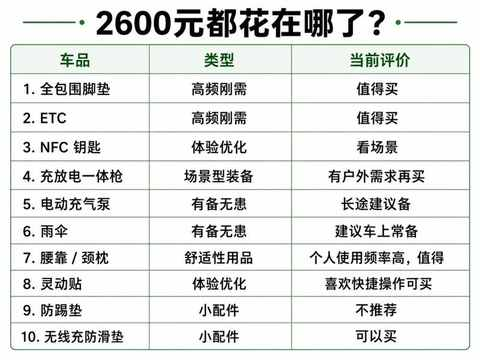
脚垫和充放电一起枪累积超2000元，其他都不贵，但累计金额并不低。
从现在的经验和视角回看，有一些不该买，有一些有可替代的商品，好在大部分也都物尽其用。
买不买的三个判断标准
1. 是否高频使用
例如：当初在闲鱼买的腰靠和颈枕一直在用，任意座位都能使用。
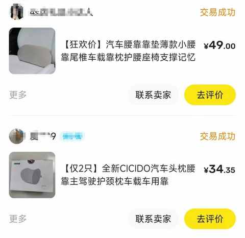
脚垫、隔热膜、充电线的道理也是如此，逐渐和车融为一体。
2. 是否符合用车场景
例如：某天刷到博主推荐理想商城的一款灯，冲动下单后闲置。
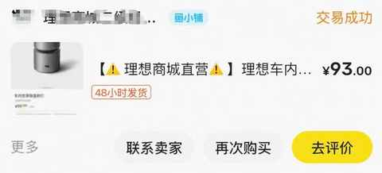
总结下来，发现自己并没有类似博主经常在后排休息的场景。
3. 是否能带来独特体验
例如：极氪的灵动贴，配置好之后，能实现一些联动的效果，选好位置安装之后便能和实体按键一样使用。
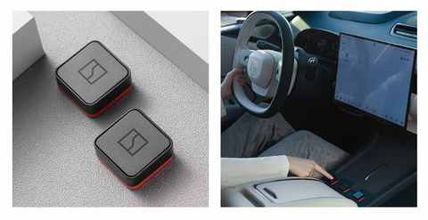
优先买：高频刚需类
1. ETC设备
经常高速基本必备，走ETC车道能快不少，现在新出的ETC大多小巧且能直接绑定微信或支付扣款，无需办理专门用于ETC的银行卡。
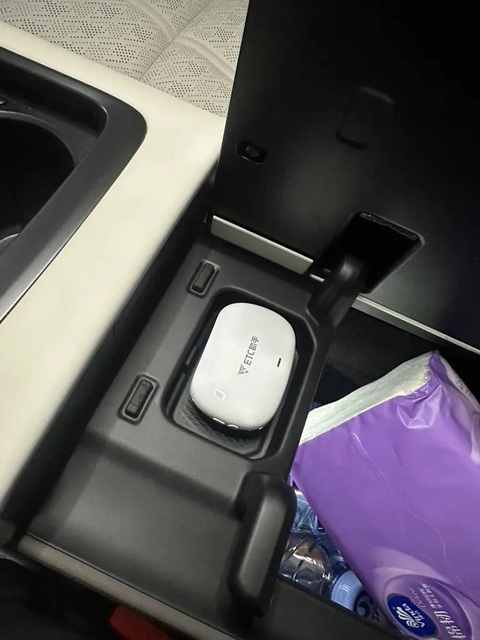
现在越来越多的车辆内置ETC，估计大部分车都无需额外购买ETC设备。
2. 车载脚垫
脚垫能有效的保持车内的清洁，小朋友实在太能造了，这次特地选的是全包围的脚垫，安装的时候需要拆装前排的两个座椅。

如果你对此比较介意，可选其他类型的脚垫。
看场景：体验优化类
1. NFC钥匙
又称卡片钥匙，和酒店的房卡类似，方便解锁车辆。
现在各种新能源车的App都很强大，用手机解锁更方便，卡片钥匙逐渐变得不再是刚需。

大部分人准备一个卡片钥匙放在车上，主要是用于洗车，方便工作人员挪车。
2. 充放电一体枪
如果你有露营、户外用电、临时外放电的需求，它确实有用；但如果这些场景只是“在想象中会发生”，那它很可能长期躺在后备箱里。

有备无患：不常用，但车上得有
1. 电动充气泵
当一个充电泵被用上的时候，往往伴随着另一个事情：补胎！
记得当时是早上送娃去上学，正常时间出发，还没出车库胎压便开始报警，只能把车停在路边快速给车胎补气。先把娃送到学校。
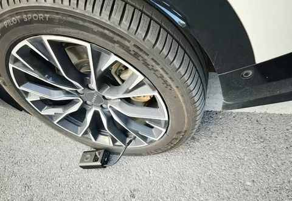
日常城区出行，车上有没有电动充气泵影响很小，但是长途出行有和没有便很不一样，给车胎补上气能多行驶一段距离免于叫拖车。
2. 雨伞
天要下雨，总是难免的。车上有伞，至少能让你在突如其来的暴雨里少一点狼狈，多一些从容。 天要下雨，总是难免的，车上有伞便能
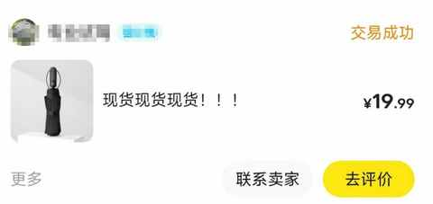
我建议车上至少放两把伞，一把放主驾门板，一把放后排，尤其是有接娃场景占比高的家庭用车。
谨慎买：最容易踩坑的是小配件
有一些小配件，单价不高，但最容易越买越多。尤其是 提车初期对自己的真实需求把握不准，容易被商家所误导，下面举两个例子：
1. 防踢垫
这款防踢垫，是一个生动的例子，买了没多久便丢掉。
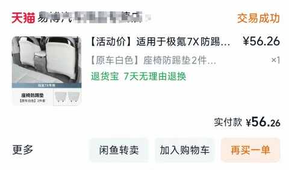
有两个核心因素：
1）安装不牢固，做工一般
不牢固便导致时不时需要重新安装，反而更费功夫。
2）防踢垫脏了也需要打理
如果防脏垫是为了让原车座椅保持整洁，但看到污渍而不清理无异于自欺欺人。
2. 无线充防滑垫
相较而言，无线充防滑垫则从提车一直用到现在。
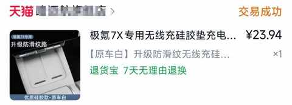
质感不错，防滑效果显著，颜色和内饰自然融合。
如果能回到过去，我会分批买
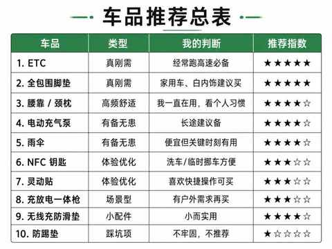
第一波：刚需+应急
这两类车品，能让你 在提高出行体验的同时也能做到有备无患。
第二波： 体验优化类
可能在提车1-2个月后，陆续根据用车场景和需求来购买，此时已经从消费冲动的状态满满变得稳定。
第三波：小配件放最后买
小配件最容易让人误判，因为它们单价低，决策成本也低。但车品消费最容易失控的地方，恰恰不是大件，而是这些“看起来不贵”的小东西。
这种类型的车品放在后期购买，能极大地降低买错的概率。
总结
车品肯定不是越多越好， 不要想着一次买齐所有需要的车品，要先开一段时间再做具体的购买决策。
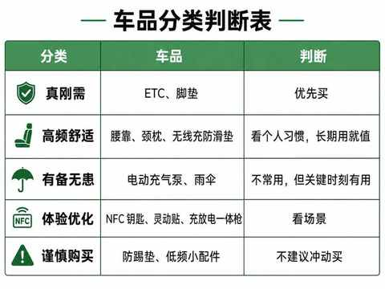
真正值得买的，必然是能经常使用的、提升体验的、长期离不开的东西。
毕竟，车最大的用途还是用来开。对于新能源车而言，其空间属性也在逐步迸发，具体到的个人用车需求每个人都有自己的品味，而这些都需要在时间、体验和经验的共同作用下才能逐步显现出来。
希望大家都能买到符合自己需求的，称心如意的车品。
相关阅读：
11 个月，开极氪7X跑两万公里，用车总结及好物分享
弯路没少走！8年新能源车主的真心话：这10件车载好物，用车离不开！
极氪7X开到3万公里，保养、充电、保险一共花了多少钱
从新鲜到习惯：16 个月开极氪7X跑3万公里后，我离不开的与早已忽略的
100度纯电SUV第2次春运实录：去程充电1次，返程我学会了「下高速」
从插混换到纯电，一年开2万公里后，我已经不在意能耗且没有里程焦虑！
开了7年混动后，我为何最终投向纯电？一位车主的心路历程
我的电车购买逻辑：用100kWh大电池的“确定性”，替代三电的“不确定性”